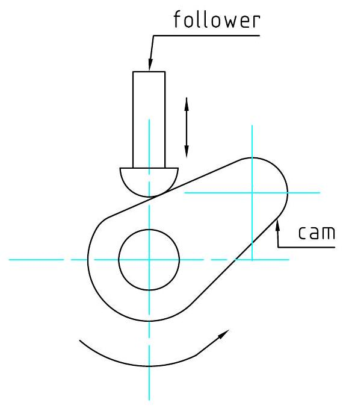
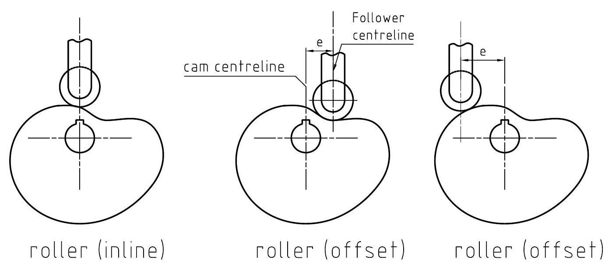
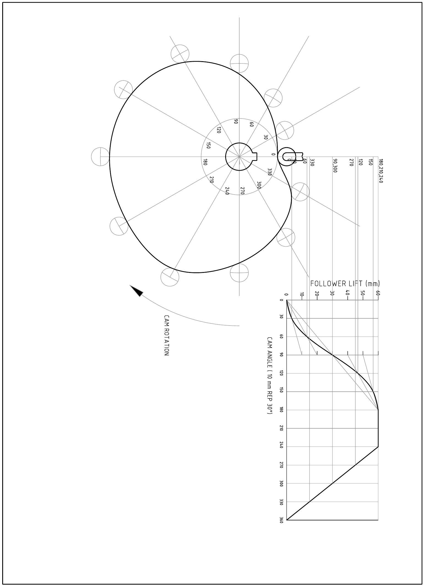

Chapter 5
Cam profiles
5.1 Introduction
Cams are used to convert the input motion (usually rotary motion) to reciprocating motion by causing the follower to rise and fall in a predetermined manner. As the cam turns, in a circular motion, the cam follower traces out the surface of the cam, transmitting its motion into the required mechanism. Figure 5.1 shows a simple cam and follower used in a combustion engine.
Figure 5.1: Cam and follower
Typical example of their usage include:
- Textile machinery
- Internal combustion engine
- Control systems and devices
- Food processing machines
- Toys
In all cam systems it is important that the follower is always in contact and following the motion of the cam. This is achieved in a number of ways including the following.
- Gravity
- Using a mechanical constraint system i.e groove
- Using a spring force
- Using a pneumatic or hydraulic force
The problem of the designer is to construct the cam profile necessary to obtain the desired motion of the follower.
5.2 Displacement diagrams
Since the motion of the follower is of primary importance, its rate of speed and its various positions should be carefully planned in a displacement diagram before the cam profile is constructed.
A displacement diagram is a curve showing the displacement of the follower as ordinates erected on a baseline that represents one revolution of the cam. The follower displacement should be drawn to scale but any convenient length can be used to represent $360^{\circ}$ of the cam rotation.
Types of follower motion:
- Uniform velocity; equal displacements of the follower during equal periods of time (equal change of cam angular displacement)
Figure 5.2: Uniform velocity displacement diagram
The main disadvantage of this type of motion is that it produces abrupt changes of movement in the follower at the beginning and end of both rise and fall.
- Simple harmonic motion; the displacement diagram is a sine curve. This motion provides the smoothest change of motion in the follower.
Figure 5.3: Uniform velocity displacement diagram
- Uniform acceleration and retardation; this displacement diagram is parabolic. It gives a uniform rate of accelaration from the start to the midpoint and a similar uniform rate of retardation from the midpoint to the end of the movement.
Figure 5.4: Uniform velocity displacement diagram
Cams are made in a variety of forms,including:
- A rotating disk or plate with the radial required profile;
- A reciprocating wedge of the required shape.
- A cylindrical barrel cam (drum) with a follower groove cut in the diameter
- A cylinder with the required profile cut in the end (end cam);
Figure 5.5: Types of cams
Cam followers can either be reciprocating or pivoting. There are various ways of transferring the motion from the cam to the follower which include:
- knife edge
- flat face
- roller
- curved shoe or spherical.
Figure 5.6: Cam follower types
The cam follower can be either offset or in line with the cam center of rotation as shown in figure 5.7.
Figure 5.7: Cam follower types
5.3 Drawing a cam profile to a given data
The first stage in creation of a cam system is to create the displacement diagram.
- Draw the two centerlines of the cam to locate its center of rotation.
- Draw the maximum and minimum diameter circles about the cam center. Divide these radially into sectors to correspond with the displacement divisions.
- Strike arcs to cut the appropriate radial division
- Draw a smooth curve through the intersection points
- For roller ended followers, the baseline of the displacement diagram is set in line with the center line of the roller and the cam curve is drawn tangential to the series of plotted roller circles.
Exercise
- Draw a cam profile given the following data:
- In-line knife edge follower
- 50 mm minimum diameter
- 70 mm rise and fall with Uniform velocity
- $0^{\circ}-90^{\circ}$ bottom dwell, $90^{\circ}-180^{\circ}$ rise, $180^{\circ}-270^{\circ}$ top dwell, $270^{\circ}-360^{\circ}$ fall
- clockwise rotation
- Draw a cam profile given the data below:
- In-line roller follower $\phi 12 \mathrm{~mm}$
- 50 mm minimum diameter
- 60 mm rise and fall with simple harmonic motion
- $0^{\circ}-90^{\circ}$ bottom dwell, $90^{\circ}-180^{\circ}$ rise, $180^{\circ}-270^{\circ}$ top dwell, $270^{\circ}-360^{\circ}$ fall
- clockwise rotation
- Draw the cam profile which imparts the following vertical motion to a flat follower acting along the vertical centerline of the cam:
- $0^{\circ}-90^{\circ}$ rise 28 mm with uniform acceleration
- $90^{\circ}-180^{\circ}$ rise 21 mm with uniform retardation
- $180^{\circ}-210^{\circ}$ dwell
- $210^{\circ}-360^{\circ}$ fall 49 mm with simple harmonic motion
- least distance from follower to cam center 50 mm
- cam shaft diameter 20 mm
- Clockwise rotation of the cam
Figure 5.8: Cam profile for combined motion
Example 2
Draw the profile of a disc plate cam which imparts the following vertical motion to a roller follower, $\phi 10 \mathrm{~mm}$, whose centreline is offset 20 mm to the left of the cam centerline.
- $0^{\circ}$ to $180^{\circ}$ Rise 66 mm with uniform acceleration and retardation
- $180^{\circ}$ to $240^{\circ}$ Top dwell
- $240^{\circ}$ to $360^{\circ}$ Fall 66 mm with uniform velocity
Least radius of cam $=25 \mathrm{~mm}$
Direction of rotation of the cam is clockwise.
Cam shaft diameter $=18 \mathrm{~mm}$
Example 3
Draw a cam graph and the profile of a disc plate cam which imparts the following vertical motion to a roller follower, $\phi 12 \mathrm{~mm}$:
- $0^{\circ}$ to $180^{\circ}$ Rise 60 mm with uniform acceleration and retardation
- $180^{\circ}$ to $240^{\circ}$ Top dwell
- $240^{\circ}$ to $360^{\circ}$ Fall 60 mm with uniform velocity
Least radius of cam $=25 \mathrm{~mm}$
Direction of rotation of the cam is clockwise.
Cam shaft diameter $=18 \mathrm{~mm}$
Figure 5.9: Solution (Example 2)
Figure 5.10: Solution (Example 3)